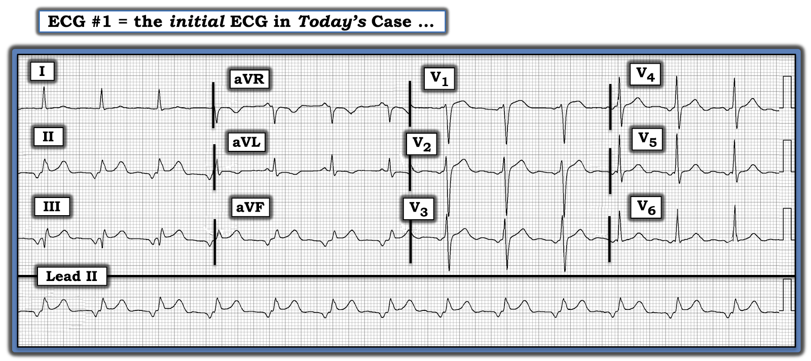
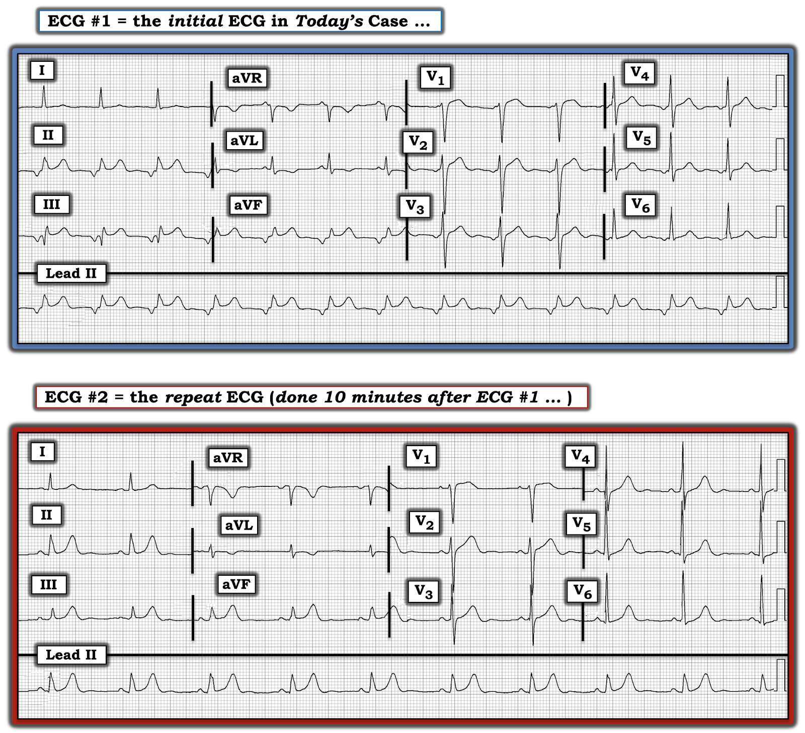

ECG Blog #308 — Sóng P "lạ" & STEMI thành dưới cấp
Điện tâm đồ ở Hình-1 được ghi từ một người đàn ông 70 tuổi bị tăng huyết áp lâu năm. Bệnh nhân đến khám sức khỏe định kỳ hằng năm. Ông phủ nhận có triệu chứng.
- Chẩn đoán sơ bộ STEMI thành dưới cấp đã được đưa ra khi nhìn điện tâm đồ ở Hình-1. Bạn có đồng ý không?


SUY NGHĨ CỦA TÔI về điện tâm đồ ở Hình-1:
Bắt đầu với Tần số & Nhịp — dải nhịp (rhythm strip) dài ở chuyển đạo II cho thấy nhịp đều, tần số ~80-85/phút. Phức bộ QRS hẹp. Có sóng P đứng trước mỗi phức bộ QRS — nhưng sóng P này âm ở chuyển đạo II. Vì vậy nhịp không phải nhịp xoang. Thay vào đó — đây hoặc là nhịp nhĩ thấp (low atrial rhythm) — hoặc — là nhịp bộ nối gia tốc (accelerated junctional rhythm).
- LƯU Ý: Dù khoảng PR ngắn — điều này không giúp phân biệt nhịp nhĩ thấp với nhịp bộ nối, vì chính tốc độ dẫn truyền (chứ không phải khoảng cách từ nút SA) mới quyết định độ dài khoảng PR.
Tiếp tục diễn giải điện tâm đồ #1:
- Các khoảng: Khoảng QRS và QTc bình thường.
- Lớn các buồng tim: Không có.
- Thay đổi Q-R-S-T: Có một sóng Q đơn độc nhưng lớn ở chuyển đạo III. Tăng tiến sóng R (R wave progression) bình thường — với vùng chuyển tiếp (nơi sóng R trở nên cao hơn độ sâu của sóng S) xuất hiện bình thường giữa chuyển đạo V3-đến-V4. Dấu hiệu chính đáng lo ngại là hình ảnh có vẻ là ST chênh lên ở mỗi chuyển đạo thành dưới — kèm hình ảnh có vẻ là ST chênh xuống soi gương (reciprocal) ở chuyển đạo aVL. Phần còn lại của điện tâm đồ không có gì đáng chú ý.
CÂU HỎI:
- ST chênh lên ở Hình-1 có phải là một dấu hiệu "thật" không?
TRẢ LỜI: Hiện tượng Emery
Hình ảnh ST chênh lên ở các chuyển đạo thành dưới của Hình-1 phản ánh Hiện tượng Emery (Emery Phenomenon) — trong đó sóng tái cực nhĩ (atrial repolarization wave) ngược hướng (tức là sóng T của sóng P) tạo ra hiệu ứng "giả" ST chênh lên do sóng P âm ở các chuyển đạo thành dưới có kích thước tương đối lớn, kèm khoảng PR ngắn.
- Phần lớn thời gian — sóng Tp (còn gọi là sóng "Ta" hay sóng T nhĩ) bị ẩn bên trong phức bộ QRS. Nhưng trong những trường hợp ít gặp khi thấy sóng P âm lớn với khoảng PR ngắn ở các chuyển đạo thành dưới — sóng Tp ngược hướng đi kèm có thể giả dạng nhồi máu thành dưới cấp (Xem Bình luận của tôi trong bài ngày 3 tháng 6 năm 2020 trên ECG Blog của Dr. Steve Smith để xem bàn luận về Hiện tượng Emery trong bối cảnh một ca đã được chuyển đi thông tim vì hình ảnh "giả" ST chênh lên này).
Để minh họa hiện tượng này — tôi đã chỉnh sửa Hình-2, lấy từ một bài năm 2015 trên trang web ECG Rhythms.
- Như gợi ý ở Hình-2 — sóng tái cực nhĩ (tức là sóng T của sóng P) luôn luôn hiện diện — nhưng khi có nhịp xoang, thời điểm của sóng Tp phần lớn trùng với thời điểm của phức bộ QRS, và vì vậy không được nhận thấy trên điện tâm đồ (nửa vòng tròn chấm chấm màu ĐỎ, nhìn thấy ở bên trái Hình-2).
- Như thể hiện ở Hình-2 — sóng Tp sẽ có hướng ngược với sóng P. Vì vậy, khi có nhịp xoang bình thường (trong đó, theo định nghĩa, sóng P sẽ dương ở chuyển đạo II) — sóng TP sẽ âm.
- NẾU sóng P ở chuyển đạo II âm (như có thể gặp trong hoặc nhịp nhĩ thấp hoặc nhịp bộ nối) — thì sóng Tp sẽ dương (nửa vòng tròn chấm chấm màu ĐỎ, nhìn thấy ở bên phải Hình-1). Nếu sóng Tp có kích thước lớn và dương — nó có thể làm biến dạng phần cuối phức bộ QRS và tạo ấn tượng sai là ST chênh lên.

Những điểm CHÍNH:
- Kích thước sóng Tp tỷ lệ với kích thước sóng P của nó. Sóng P nhỏ sẽ tạo ra sóng Tp nhỏ tương ứng. Sóng P lớn sẽ tạo ra sóng Tp lớn hơn nhiều.
- Thực ra, tác động của sóng tái cực nhĩ ( = sóng Tp — còn gọi là sóng "Ta" hay sóng T nhĩ) ngược hướng sẽ còn lớn hơn cả mức minh họa ở Hình-2 phía trên — vì thời gian bình thường của sóng Ta dài hơn đáng kể (dài gấp tới 2-3 lần) so với thời gian bình thường của sóng P (Francis). Điều này có thể giải thích tác động bị phóng đại lên đoạn ST khi sóng P lớn.
- Dù vậy — tôi đã giữ nguyên các tỷ lệ tương đối ở Hình-2 như trong phiên bản gốc của Hình này lấy từ trang web ECG Rhythms. Lưu ý rằng khoảng PR của sóng P âm ở Hình-2 dài gần bằng khoảng PR của nhịp xoang bình thường. Nhưng NẾU khoảng PR của sóng P âm ở chuyển đạo II ngắn hơn nhiều (như trong ca hôm nay) — thì sóng Tp dương gặp trong nhịp nhĩ thấp sẽ càng bị đẩy lệch về bên phải, và sẽ tạo ra mức độ giả-ST-chênh-lên lớn hơn nhiều!
Ca bệnh tiếp diễn:
10 phút sau trong ca hôm nay — một điện tâm đồ ghi lại đã được thực hiện (Hình-3).
- Điều gì đã xảy ra ở Hình-3?


TRẢ LỜI:
Điện tâm đồ ghi lại (bản ghi phía dưới ở Hình-3) — cho thấy đã trở lại nhịp xoang bình thường với sóng P dương ở chuyển đạo II, và tần số tim nhìn chung chậm hơn so với điện tâm đồ #1.
- Sau khi sóng P xoang dương bình thường ở chuyển đạo II (cũng như ở các chuyển đạo thành dưới khác) trở lại — không còn ST chênh lên nào ở các chuyển đạo thành dưới của điện tâm đồ #2. Ngoài ra — mức điểm J chênh xuống nhẹ từng thấy ở chuyển đạo aVL của điện tâm đồ #1 cũng không còn nữa.
- Vì điện tâm đồ #2 được ghi chỉ 10 phút sau điện tâm đồ #1, không hề có thay đổi nào trong tình trạng lâm sàng của bệnh nhân — việc hết ST chênh lên ở các chuyển đạo thành dưới (và hết điểm J chênh xuống ở chuyển đạo aVL) — khẳng định rằng ST chênh lên từng thấy ở điện tâm đồ #1 không phải là thật. Thay vào đó — nó chỉ đơn giản là tác động của Hiện tượng Emery, gây ra bởi các sóng P âm biên độ lớn ở chuyển đạo thành dưới kèm khoảng PR ngắn đã thấy ở điện tâm đồ #1.
Điểm CHÍNH:
- Dù không còn ST chênh lên ở điện tâm đồ #2 — sóng T ở chuyển đạo thành dưới trông vẫn "quá đầy đặn" (hypervoluminous) (tức là mỗi sóng T ở chuyển đạo thành dưới đều bằng hoặc vượt biên độ sóng R trong cùng chuyển đạo — và mỗi sóng T này đều có đáy rộng hơn mong đợi).
- Ngoài ra — mặc dù phức bộ QRS ở chuyển đạo aVL không âm ưu thế — sóng T ở chuyển đạo này vẫn đảo ngược.
- ĐIỂM THEN CHỐT (PEARL): Tầm quan trọng của Bệnh sử không bao giờ có thể nói quá. NẾU tôi được cho xem điện tâm đồ #2 và được cho biết bệnh nhân có điện tâm đồ này đang than đau ngực mới khởi phát — tôi sẽ diễn giải bản ghi này là có sóng T tối cấp (hyperacute T waves) ở mỗi chuyển đạo thành dưới, kèm thay đổi soi gương (reciprocal) ở chuyển đạo aVL. Chẩn đoán của tôi sẽ là tắc cấp RCA (động mạch vành phải — Right Coronary Artery) cho đến khi chứng minh được điều ngược lại.
- Tuy nhiên, người đàn ông 70 tuổi trong ca hôm nay hoàn toàn không có triệu chứng — lý do ghi điện tâm đồ là "thường quy", trong đợt khám sức khỏe định kỳ của bệnh nhân. Với thông tin này — rất có khả năng không có gì cấp tính đang diễn ra ở điện tâm đồ #2.
- Tôi đoán rằng xem lại hồ sơ bệnh án của bệnh nhân, tìm một điện tâm đồ cũ để so sánh, sẽ nhanh chóng giải đáp mọi câu hỏi khi cho thấy hình ảnh sóng ST-T tương tự đã có từ lâu.
THÔNG ĐIỆP cần nhớ:
Hãy lưu ý đến Hiện tượng Emery! Mọi nhân viên y tế có công việc liên quan đến đọc điện tâm đồ thỉnh thoảng sẽ gặp bệnh nhân có nhịp nhĩ thấp hoặc nhịp bộ nối (với sóng P âm lớn và khoảng PR ngắn ở các chuyển đạo thành dưới) — tạo ra ST chênh lên ở chuyển đạo thành dưới (thường kèm thay đổi soi gương ở chuyển đạo aVL) mà đơn giản là không phải thật.
=======================
Lời cảm ơn: Tôi xin cảm ơn Kianseng Ng (từ Kluang, Malaysia) đã cung cấp ca bệnh và bản ghi này.
=======================
Tài liệu bổ sung liên quan đến ca hôm nay:
- Xem ECG Blog #185 — để ôn lại Cách tiếp cận Ps, Qs, 3R có hệ thống trong diễn giải nhịp.
- Xem ECG Blog #205 — Ôn lại Cách tiếp cận hệ thống của tôi trong diễn giải điện tâm đồ 12 chuyển đạo.
- Để biết thêm về cách phân biệt Nhịp Nhĩ Thấp với Nhịp Bộ Nối — Vui lòng xem Bình luận của tôi ở CUỐI trang trong bài ngày 28 tháng 1 năm 2019 trên ECG Blog của Dr. Smith.
- Xem ECG Blog #290 — để xem một ví dụ khác về Hiện tượng Emery.
- Và để xem một ca khác về Hiện tượng Emery — Vui lòng xem Bình luận của tôi ở CUỐI trang trong bài ngày 3 tháng 6 năm 2020 trên ECG Blog của Dr. Smith.